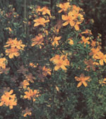
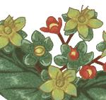

One of the most puzzling questions to grapple with while we electrify and technologize and work-ethic ourselves into the twenty-first century is why life is making such an alarming number of us seriously depressed. Whether we have grown selfinvolved to the point of absurdity or are finally managing to alienate ourselves from true spirituality by burying it under appliances and money and cell-phones, sadness has simply become epidemic ...and a killer. According to the National Institute of Mental Health (NIMH), untreated depression is the number one cause of not only all alcohol and drug addiction but also all eating disorders, and the $40 billion of lost work and business failures is just the visible part of the iceberg. Lurking underneath are legion suffering children and wives who endure violence as well as the quiet (and too often explosively not quiet) suffering of the depressed people themselves, some twenty million of them in the US. alone.
Whether gripped by backwards thinking or not, pharmaceutical companies have sought the answer in plastic capsules, and ever since the introduction of MAO (mono-amino-oxidase) inhibitors in the '70s and the updated SSRIs (Selective Serotonin Reuptake Inhibitors such as Prozac, Zoloft, and Paxil) of the '90s, we have taken the bait and are currently mortgaging ourselves to drug companies to the tune of nearly $3 billion a year-for antidepressant medication alone!
It is not for us to decide whether happiness can ever be found in a bottle, but the quiet revolution in medical care currently taking place in Europe, and the "miracle herb" prescribed there (twenty million people taking sixty-six million doses every day in Germany alone), may herald an age when we find a way to make health and happiness something that can be grown as well as bought.
This herb, derided for centuries by gardeners as a bothersome pest, is called St. John's Wort (Hypericum in more clinical circles). Within the past five years, over 5,000 patients have participated in hypericum drug-monitoring tests-more than 2,000 of these in double-blind studies. Eight head-to-head comparisons showed hypericum was as effective as prescription antidepressants, but with fewer side effects.
According to Dr. Richard Firshein, a columnist for Psychology Today, "We aren't sure exactly how it works though we know it inhibits the enzyme that breaks down dopamine, the 'pleasure' neurotransmitter, and may also work the way antidepressant drugs do, by inhibiting the brain's uptake of serotonin and norepinephrine ....The active ingredient, hypericin, is believed to be responsible for its mood boosting effects, and the side effects are usually quite mild."
"Mild" may be an understatement. In fact, after 2,400 years of herbal remedies involving hypericum, not one death from toxicity has ever been suspected, much less reported. It is considerably less toxic than aspirin and does not inhibit sexual desire and performance as Prozac and its cousins do. In a review of six hypericum studies, the British Medical Journal reported that 10.8 percent of patients indicated that they experienced side effects with hypericum, whereas nearly 36 percent experienced side-effects with prescription drugs.
The kicker is that even if you want to simply go to the herbal shop and buy Hypericum rather than grow it, the cost per pill is from one-fifth to one-tenth of what prescription antidepressants cost, not to mention the fact that there may be no doctor's visit to pay for.
Even those wildly enthusiastic about Hypericum admit that it works only in mild to moderate cases of depression, that it takes from four to six weeks to take effect, and that those currently taking prescription drugs require medical supervision before switching, but St. John's Wort's promise, by virtually all accounts, is simply fantastic. -Matt Scanlon
Product Name: HYPERICUM VERBATIM
Company: Hypericum Buyer's Club
Strength: 300 mg.
Type: Scored tablet (breaks into two 150 mg. doses for children or for adjusting an adult dose; no animal products used)
Cost: $27.50 for 280 tablets
Cost per day: 29 cents
Available: Mail order
Mail Order Address: Hypericum Buyer's Club, 8205 Santa Monica Boulevard, Suite 472, Los Angeles, California 90046
Mail Order Telephone: 1-888-HYPERICUM (1-888-497-3742), 24 hours
Shipping & Handling Charge: None
Product Name: ST. JOHN'S WORT
Company: Solaray
Strength: 300 mg.
Type: Gelatin capsule
Cost: $10.98 for 60 capsules
Cost per day: 55 cents
Available: Health food stores
Note: Solaray sells four St. John's wort formulations. The one that matches the extract used in the medical studies is labeled "Guaranteed Potency" and is 300 mg. (not 250 or 325 mg.).
Product Name: ST. JOHN'S WORT WHOLE EXTRACT
Company: Elixir Tonics & Teas
Strength: 300 mg.
Type: Vegi-cap capsules (no animal products)
Cost: $16.95 for 90 capsules
Cost per day: 56 cents
Available: Elixir's retail store or by mail
Mail Order & Store Address: 8612 Melrose Avenue, West Hollywood, California 90069
Mail Order Telephone: 1-888-4TONICS
Shipping & Handling Charge: $2.95
Product Name: ST. JOHN'S WORT
Company: Enzymatic Therapy
Strength: 300 mg.
Type: Gelatin capsule
Cost: $12.95 for 60 capsules
Cost per day: 65 cents
Available: Health food stores
|
 |
 |
|